Firefox might not be the most popular web browser out there right now, but the number of add-ons it has, and the ones it keeps welcoming every other day into its arsenal never cease to amaze me. The browser that became the favorite of the tech savvy crowd before there was Chrome, and still remains a favorite of countless loyal users has been known for its extensive add-on support to extend its functionality beyond the stock offerings. As we take a look back at 2013 to present our readers with the best stuff we’ve covered the whole year, it’s now time we show you our hand-picked collection of 50 Best Firefox extensions from 2013.
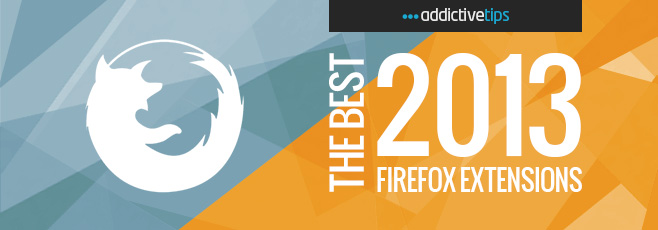
The order of add-ons in this list does not reflect their ranking in any manner.
1. Bookmark Duplicate Cleaner (Analyzes all bookmarks that you’ve saved and lists any duplicate locations so you may remove them.)

2. Classis Retweet (Adds the missing ‘Edit & RT’ feature to Twitter’s web interface.)
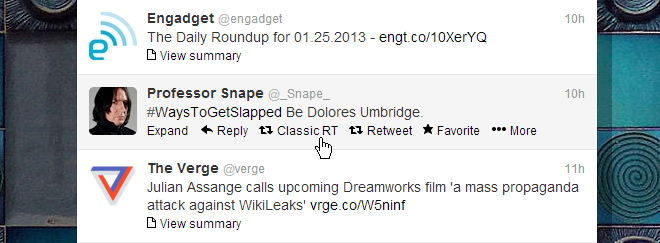
3. Powerbot for Gmail (Lets you add notes or notebooks from Evernote to Gmail, and save an email thread to an Evernote notebook, complete with attachments.)
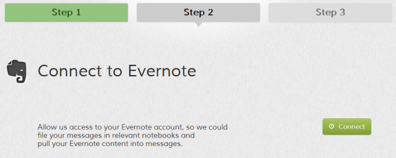
4. Newtab: Rows & Columns (Lets you customize the number of rows and columns on the new tab page’s Speed Dial.)
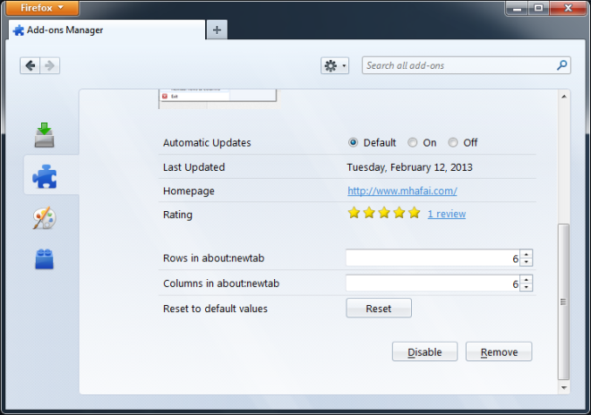
5. Mega Extension (Adds support for unlimited batch file downloading with no size restrictions to the MEGA cloud storage service.)
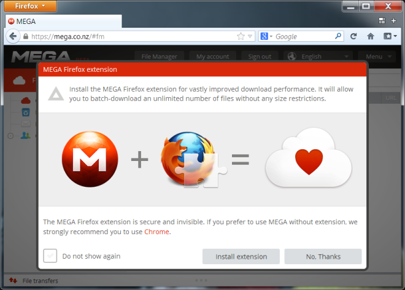
6. about:addons-memory (Easily detect the add-ons that are dragging your browser’s performance down.)
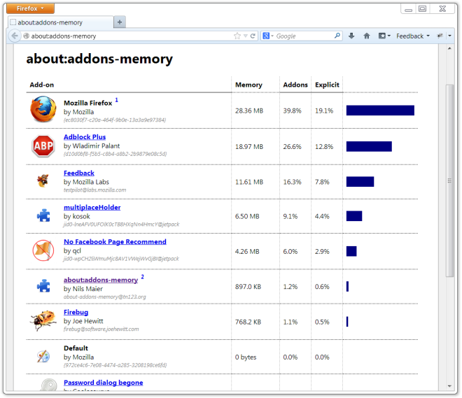
7. YouTube Lyrics (Gives you access to lyrics of songs you listen on YouTube and Grooveshark.)

8. Remove Facebook Suggested Pages and Posts (Blocks suggested posts and pages from your Facebook News Feed.)
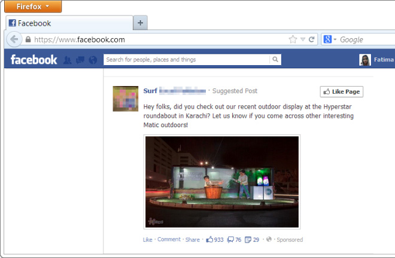
9. Password Dialog Begone (Disables that pesky password saving reminder that pops up every time you enter a password.)
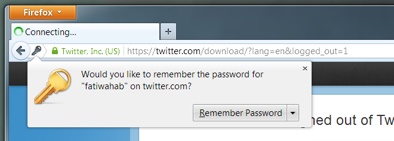
10. Advanced bookmarks Add on (Remember why you bookmarked a webpage by taking you to a scrolled position of your choice when you open it.)
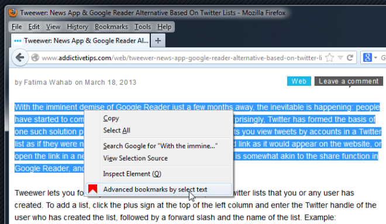
11. Firefox Button Classic Menu (Allows you to restore the old menu of Firefox, making it easier to navigate.)
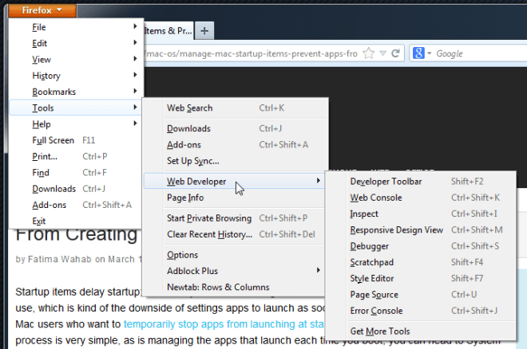
12. Google Shortcuts (Lets you access Google services from the toolbar.)
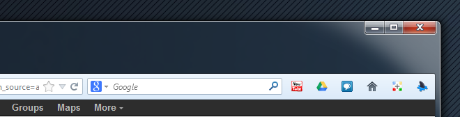
13. Hide Unwanted Results of Google Search (Hides unwanted search results from particular websites in Google Search.)
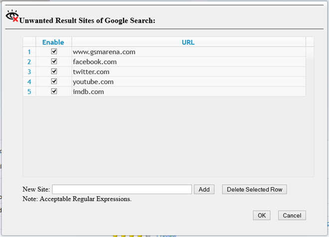
14. Bookmark Quick Mover (Lets you organize your bookmarks easily using the right-click context menu.)
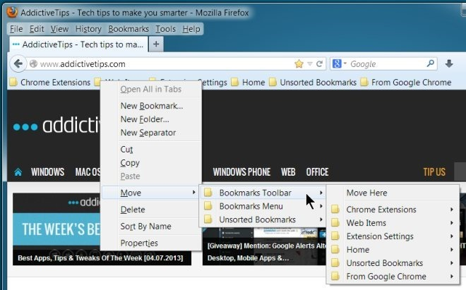
15. Search Switch (Adds the ability to search in other search engines from the default Google search page.)
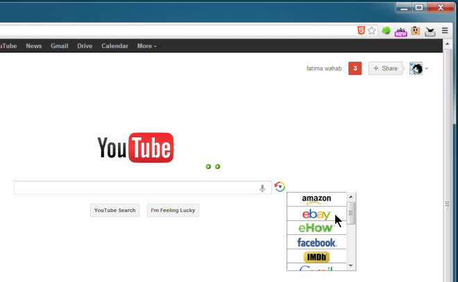
16. Easy Access (Official add-on by Mozilla that allows you to launch some useful applications installed on your PC directly from Firefox.)

17. TranslateWebpageAtGoogle (Adds a webpage translation option via Google Translate to the right-click context menu.)

18. Fullscreen+ (Keeps Windows Taskbar accessible even when you switch Firefox to browse the web in full screen mode.)
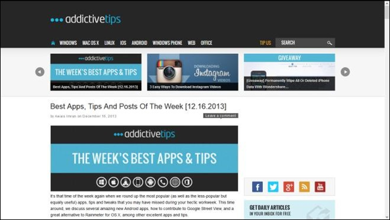
19. Google Keep (Unofficial add-on that allows you to use Google’s note-taking service in a popup.)
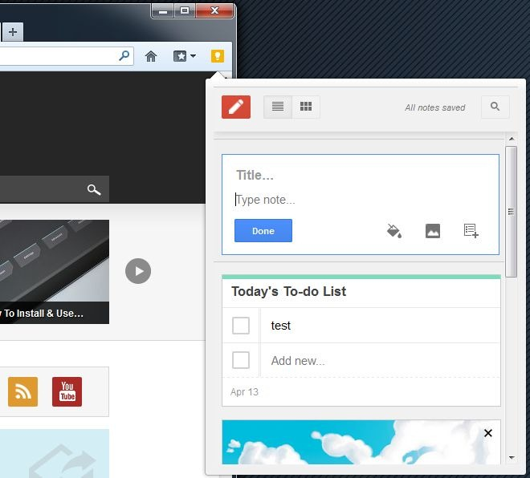
20. PowerInbox (Allows you to integrate social media services into major email providers.)
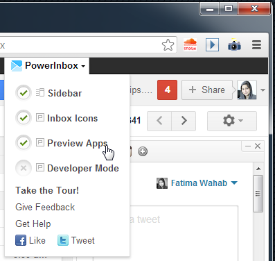
21. LinksWatched (Automatically warns you when you open duplicate tabs.)
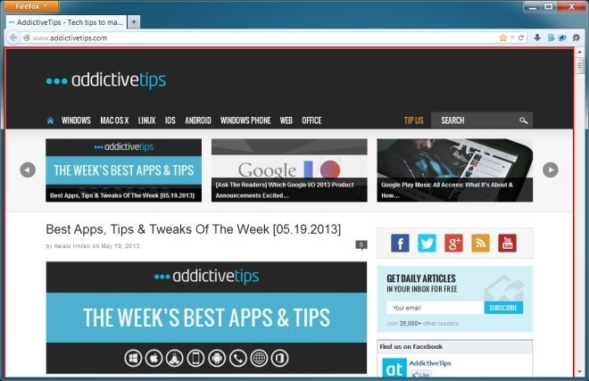
22. Yet Another Context Search (Search for highlighted text via right-click context menu using sources like Google, Yahoo, Bing and Wikipedia.)
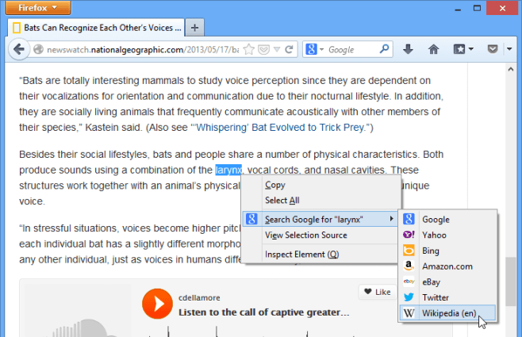
23. Download Panel Tweaks (Easily adjust the size and other aesthetical parameters of the download drop-down menu of Firefox.)

24. Paste and Go Hotkey (Specify a hotkey of your choice for the Paste & Search option.)
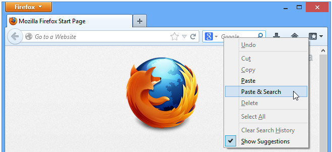
25. Self-Destructing Cookie (Probably the easiest way to automatically get rid of cookies upon exiting your browser.)
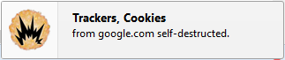
26. YouTube Smart Pause (Pauses YouTube playback when you switch to another tab, and resumes it when you return to it.)
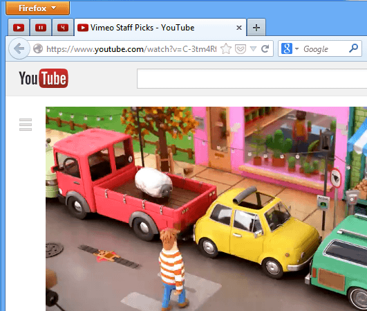
27. Disconnect (Blocks tracking cookies, social widgets and other intrusive scripts on the websites you browse.)
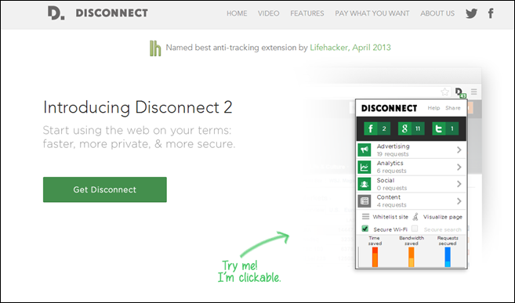
28. Fess Google Bookmark Extension (Lets you manage your Google bookmarks from Firefox.)
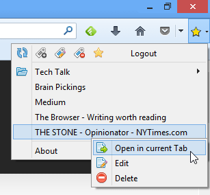
29. All Tabs Restorer (Remember the tabs preview feature in Firefox? This add-on does a great job bringing it back.)
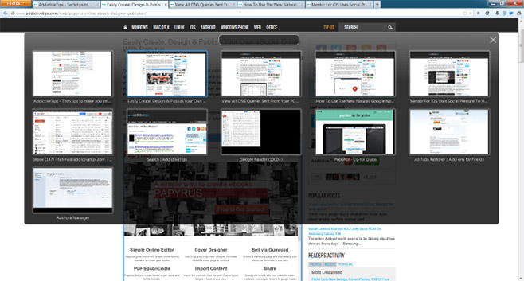
30. Gmail Notifier (Notifies you of new emails in your Gmail account.)
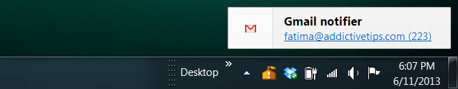
31. HelloSign for Gmail (Handy solution to quickly opening, signing and editing documents from Gmail attachments.)
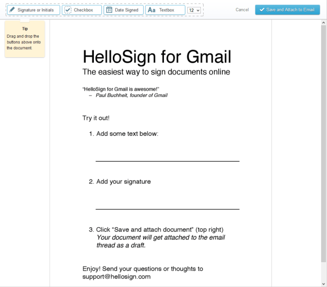
32. Be Quiet (Automatically pauses any current streaming audio or video on YouTube, Pandora etc., when you play a new one.)
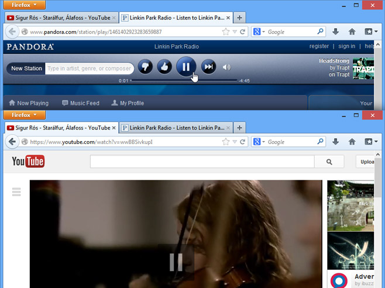
33. Scroll Search Engine (Lets you scroll on the search bar to quickly switch between available search engines.)
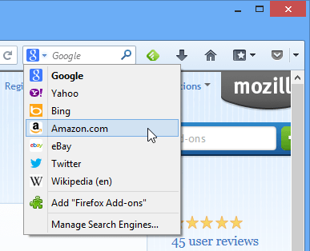
34. Download Scheduler (Schedule several downloads to start at different times of your choice, and also automatically pause them at a specified time.)
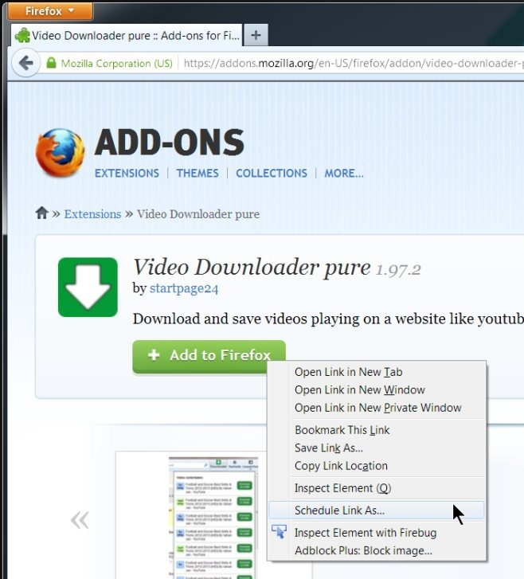
35. Multi-Link Paste and Go (Simply copy multiple URLs to clipboard and have them opened in separate tabs when you paste them in Firefox.)

36. Show/Hide Passwords (Toggle the visibility of passwords in password fields with a simple click.)
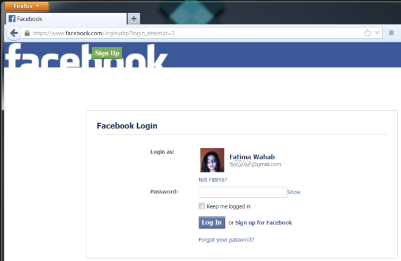
37. New newtab tab (Replaces the new tab page with an old Google Chrome-style one with speed dials.)

38. TabCross (Keep a tab on your favorite websites in an always accessible sidebar.)
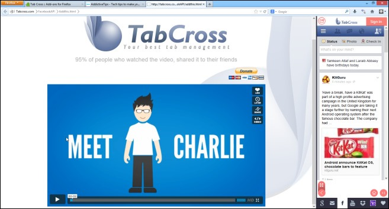
39. PinTabAlt (Restores all the tabs that you have pinned to the tab bar, including ones that were pinned to previously closed windows.)
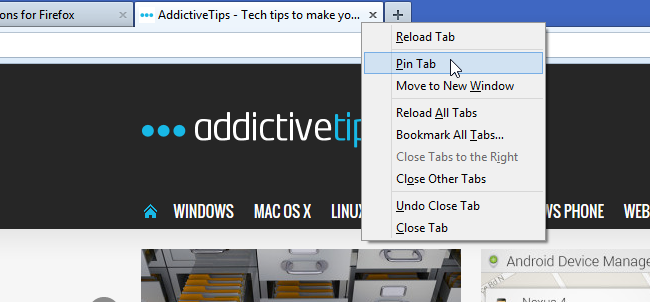
40. Curiyo (Look up relevant information on highlighted words on a web page without leaving it.)
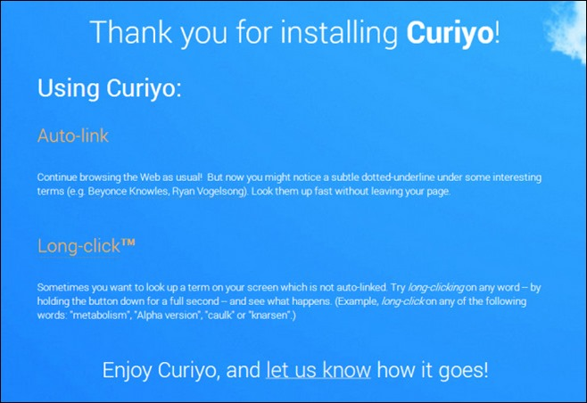
41. tabPreLoader (Automatically restores all tabs from the previous session when starting Firefox.)
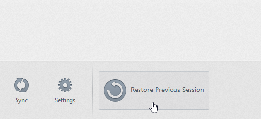
42. TabFlip (Flip through tabs by holding the right-click button and moving the mouse horizontally.)
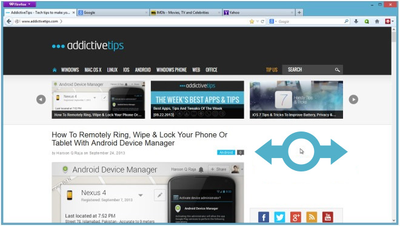
43. Google Image Search (Adds Google’s reverse image search option to the right-click context menu.)

44. Redirect Bypasser (Detects and skips redirects to takes you to the final target link directly.)
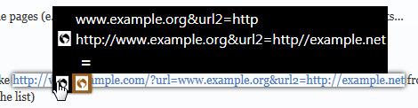
45. TabStash (Lets you hide and restore opened tabs with a single click.)
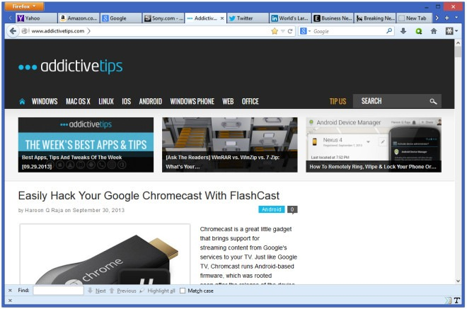
46. Blocksite (Block wanted sites within a few clicks, with no complex settings or complicated UI.)
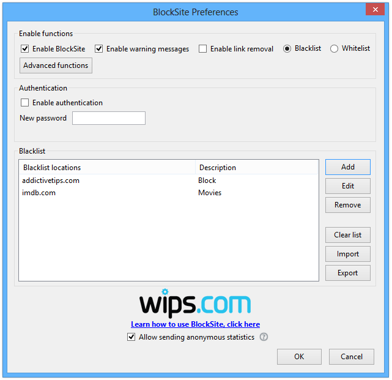
47. Copy All Links (Download all the links from highlighted text via the right-click context menu.)
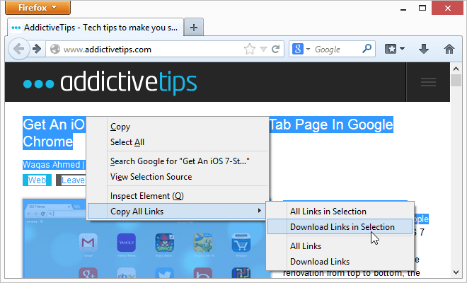
48. Space Next (Loads the next page when you reach the bottom of a page and press the space bar.)
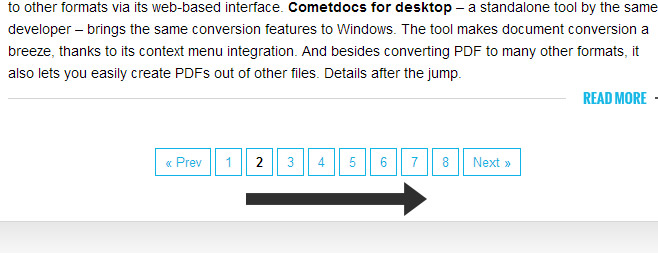
49. KilllSpinner (Prevents Firefox from loading web pages for an excessive amount of time by overriding the default load pattern of a website with a user-specified time interval.)
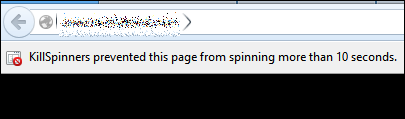
50. Supertab (Use Alt+Tab or Ctrl+Tab to easily switch tabs in Firefox like you do in Windows.)
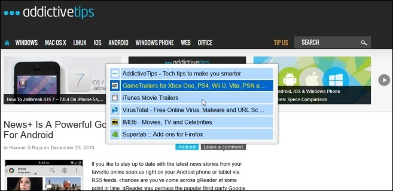
Check out our other year-end best-of compilations:
150 Best Windows Software Of Year 2013
100 Best iPhone & iPad Apps Of 2013
40 Best Windows Phone Apps Of 2013
100 Best Google Chrome Extensions Of 2013